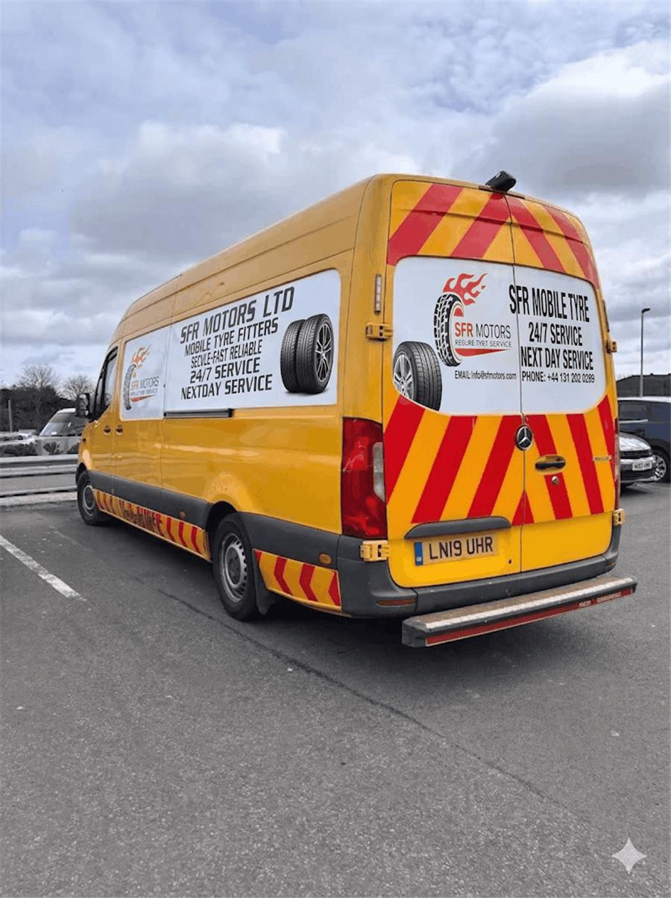

<style>
  .sfr-about{
    --sfr-ink:#15161a;
    --sfr-paper:#ffffff;
    --sfr-line:#e8e5e1;
    --sfr-sub:#5c5955;
    --sfr-orange:#ff6600;
    --sfr-orange-deep:#d94f00;
    background:var(--sfr-paper);
    padding:clamp(56px,8vw,96px) clamp(20px,5vw,32px);
    font-family:"Roboto","Segoe UI",Arial,sans-serif;
    color:var(--sfr-ink);
  }
  .sfr-about *{box-sizing:border-box;}
  .sfr-about__inner{
    max-width:1120px;
    margin:0 auto;
    display:grid;
    grid-template-columns:minmax(0,420px) 1fr;
    gap:clamp(32px,6vw,72px);
    align-items:center;
  }

  .sfr-about__media{
    position:relative;
  }
  .sfr-about__media::before{
    content:"";
    position:absolute;
    top:18px;
    left:-18px;
    width:100%;
    height:100%;
    border:2px solid var(--sfr-orange);
    border-radius:14px;
    z-index:0;
  }
  .sfr-about__frame{
    position:relative;
    z-index:1;
    border-radius:14px;
    overflow:hidden;
    aspect-ratio:3/4;
    background:var(--sfr-line);
  }
  .sfr-about__frame img{
    width:100%;
    height:100%;
    object-fit:cover;
    display:block;
    transition:transform .5s ease;
  }
  @media (hover:hover){
    .sfr-about__media:hover .sfr-about__frame img{transform:scale(1.045);}
  }

  .sfr-about__eyebrow{
    display:inline-flex;align-items:center;gap:8px;
    font-size:12px;font-weight:700;letter-spacing:.14em;text-transform:uppercase;
    color:var(--sfr-orange-deep);margin-bottom:14px;
  }
  .sfr-about__eyebrow::before{content:"";width:20px;height:2px;background:var(--sfr-orange);border-radius:2px;}
  .sfr-about__title{
    font-size:clamp(27px,3.6vw,36px);
    font-weight:900;
    line-height:1.2;
    letter-spacing:-0.01em;
    margin:0 0 16px;
    text-wrap:balance;
  }
  .sfr-about__text{
    font-size:15px;
    line-height:1.7;
    color:var(--sfr-sub);
    margin:0 0 26px;
    max-width:56ch;
  }
  .sfr-about__list{
    list-style:none;
    margin:0 0 30px;
    padding:0;
    display:grid;
    gap:14px;
  }
  .sfr-about__list li{
    display:flex;
    align-items:flex-start;
    gap:12px;
    font-size:14.5px;
    line-height:1.5;
  }
  .sfr-about__list strong{font-weight:700;}
  .sfr-about__list span{color:var(--sfr-sub);}
  .sfr-about__check{
    flex:none;
    width:21px;height:21px;
    margin-top:1px;
    border-radius:50%;
    background:var(--sfr-orange);
    display:flex;align-items:center;justify-content:center;
  }
  .sfr-about__check svg{width:12px;height:12px;stroke:#fff;stroke-width:3;}

  .sfr-about__btn{
    display:inline-flex;
    align-items:center;
    gap:9px;
    background:var(--sfr-ink);
    color:#fff;
    font-size:15px;
    font-weight:700;
    text-decoration:none;
    border-radius:9px;
    padding:15px 28px;
    transition:background .2s ease, transform .2s ease;
  }
  .sfr-about__btn svg{width:16px;height:16px;transition:transform .2s ease;}
  .sfr-about__btn:hover{background:var(--sfr-orange);transform:translateY(-2px);}
  .sfr-about__btn:hover svg{transform:translateX(3px);}
  .sfr-about__btn:focus-visible{outline:2px solid var(--sfr-orange-deep);outline-offset:3px;}

  @media (max-width:820px){
    .sfr-about__inner{grid-template-columns:1fr;}
    /* width:100% (not just max-width) gives this grid item a definite
       size to stretch to before the aspect-ratio on .sfr-about__frame
       tries to resolve — without it, stretch + auto margins + aspect-ratio
       deadlock and the photo collapses to 0x0 on mobile. */
    .sfr-about__media{width:100%;max-width:360px;margin-inline:auto;}
  }
  @media (prefers-reduced-motion:reduce){
    .sfr-about__frame img,.sfr-about__btn,.sfr-about__btn svg{transition:none;}
  }
</style>

<section class="sfr-about" aria-labelledby="sfr-about-heading">
  <div class="sfr-about__inner">

    <div class="sfr-about__media">
      <div class="sfr-about__frame">
        
      </div>
    </div>

    <div class="sfr-about__content">
      <div class="sfr-about__eyebrow">About SFR Motors</div>
      <h2 class="sfr-about__title" id="sfr-about-heading">Your Trusted Mobile Tyre Fitting Experts</h2>
      <p class="sfr-about__text">
        SFR Motors Ltd provides convenient mobile tyre fitting and repair, bringing professional
        tyre assistance directly to you instead of the other way around. Our fully equipped vans
        and experienced fitters handle everything from a single puncture to a full set of new
        tyres, wherever your vehicle happens to be.
      </p>

      <ul class="sfr-about__list">
        <li>
          <span class="sfr-about__check" aria-hidden="true"><svg viewBox="0 0 24 24" fill="none" stroke-linecap="round" stroke-linejoin="round"><path d="M5 13l4 4L19 7"/></svg></span>
          <span><strong>24/7 mobile tyre assistance</strong> &mdash; emergency callouts any time, day or night.</span>
        </li>
        <li>
          <span class="sfr-about__check" aria-hidden="true"><svg viewBox="0 0 24 24" fill="none" stroke-linecap="round" stroke-linejoin="round"><path d="M5 13l4 4L19 7"/></svg></span>
          <span><strong>Professional and reliable service</strong> &mdash; experienced fitters, fully equipped vans.</span>
        </li>
        <li>
          <span class="sfr-about__check" aria-hidden="true"><svg viewBox="0 0 24 24" fill="none" stroke-linecap="round" stroke-linejoin="round"><path d="M5 13l4 4L19 7"/></svg></span>
          <span><strong>Home, workplace and roadside fitting</strong> &mdash; we come to wherever you're parked.</span>
        </li>
        <li>
          <span class="sfr-about__check" aria-hidden="true"><svg viewBox="0 0 24 24" fill="none" stroke-linecap="round" stroke-linejoin="round"><path d="M5 13l4 4L19 7"/></svg></span>
          <span><strong>West Lothian, Edinburgh and surrounding areas</strong> &mdash; wide coverage across Central Scotland.</span>
        </li>
        <li>
          <span class="sfr-about__check" aria-hidden="true"><svg viewBox="0 0 24 24" fill="none" stroke-linecap="round" stroke-linejoin="round"><path d="M5 13l4 4L19 7"/></svg></span>
          <span><strong>Customer-focused approach</strong> &mdash; clear pricing and honest advice, every time.</span>
        </li>
      </ul>

      <a class="sfr-about__btn" href="https://sfrmotors.co.uk/about-us/">
        Learn More About Us
        <svg viewBox="0 0 24 24" fill="none" stroke="currentColor" stroke-width="2" stroke-linecap="round" stroke-linejoin="round"><path d="M5 12h13M13 6l6 6-6 6"/></svg>
      </a>
    </div>

  </div>
</section>
